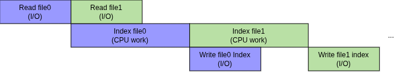
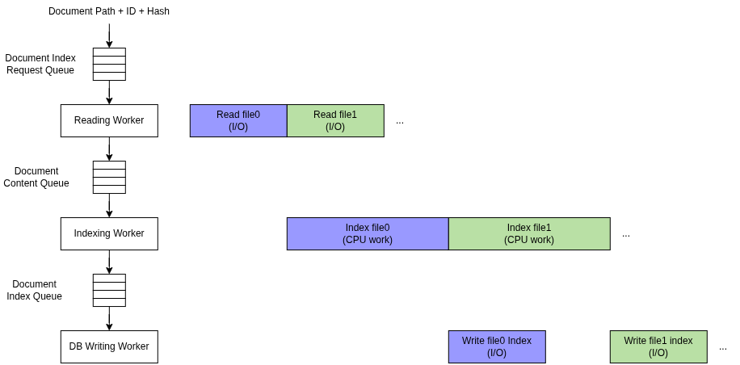
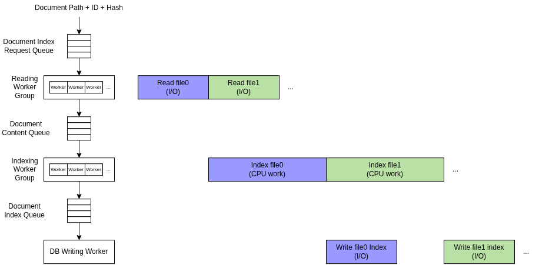

Document content and user input in the search field are tokenized/segmented in the same way, based on:
A search phrase is a list of said tokens.
Search procedure is a DFS through the document index, where the search range for a word is fixed to a configured range surrounding the previous word (when applicable).
A token in the index matches a token in the search phrase if they fall into one of the following cases: - They are a case-insensitive exact match - They are a case-insensitive substring match (token in search phrase being the substring) - They are within the configured case-insensitive edit distance threshold
Search results are then ranked using a heuristic.
TODO: Describe document discovery, format detection, PDF/DOCX conversion, tokenization, document ID allocation, incremental hashing, and SQLite transactions.
We begin by examining the naive setup:
This is a classic case of unnecessary delay where I/O of a work item waits for CPU work of the previous work item, and vice versa.
A more ideal timeline would look closer to:

This is straightforward to implement by using an actor model design:

Finally, we also try to saturate I/O and CPU by changing the first two layers into using multiple workers intead of just one worker. The final DB write layer remains a single worker as there is no benefit to parallel writes for SQLite DB unless WAL is used, but WAL is not enabled for simplicity and some minor reliability issues observed during development (likely some errors on my end, but did not have time to investigate fully).

TODO: Version 9.0.0-rc1: Explain why detecting changed files made hashing part of startup performance, and why the BLAKE2B implementation was moved from the OCaml backend to the C backend.
TODO: Explain global first-word candidate generation, document pruning, search scopes, and how the search is divided into parallel jobs.
TODO: Explain the result-ranking heuristic and the interaction between content relevance, path ordering, and path fuzzy ranking.
TODO: Version 7.1.0: Explain why GZIP compression was added to the JSON index and what it improved without changing the fully materialized index design.
TODO: Version 9.0.0-rc1: Explain why JSON+GZIP was replaced by CBOR+GZIP, and which serialization costs or limitations remained.
TODO: Version 9.0.0: Explain why CBOR+GZIP was replaced by SQLite after the in-memory index reached 1.9 GB on the 1.4 GB PDF corpus, including the reduction to 39 MB and the resulting search-speed trade-off.
TODO: Version 10.0.0: Explain why the database schema was redesigned, how this reduced index size by roughly 60%, and why the change required rebuilding existing indexes.
TODO: Version 12.0.0-alpha.13: Explain why a global word table was introduced, how it reduced duplication and improved search speed, and why this caused another breaking database change.
TODO: Add measured data for index size, startup time, search latency, and memory use. State the corpus and hardware used for each measurement.
TODO: Decide whether to include a small representative example here or link to the complete search-language documentation.